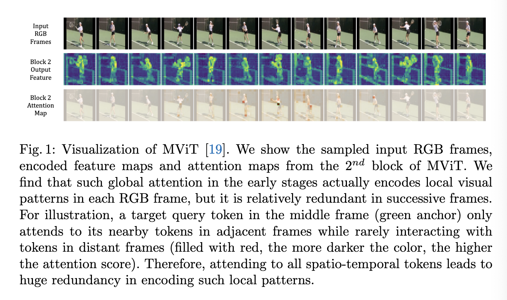
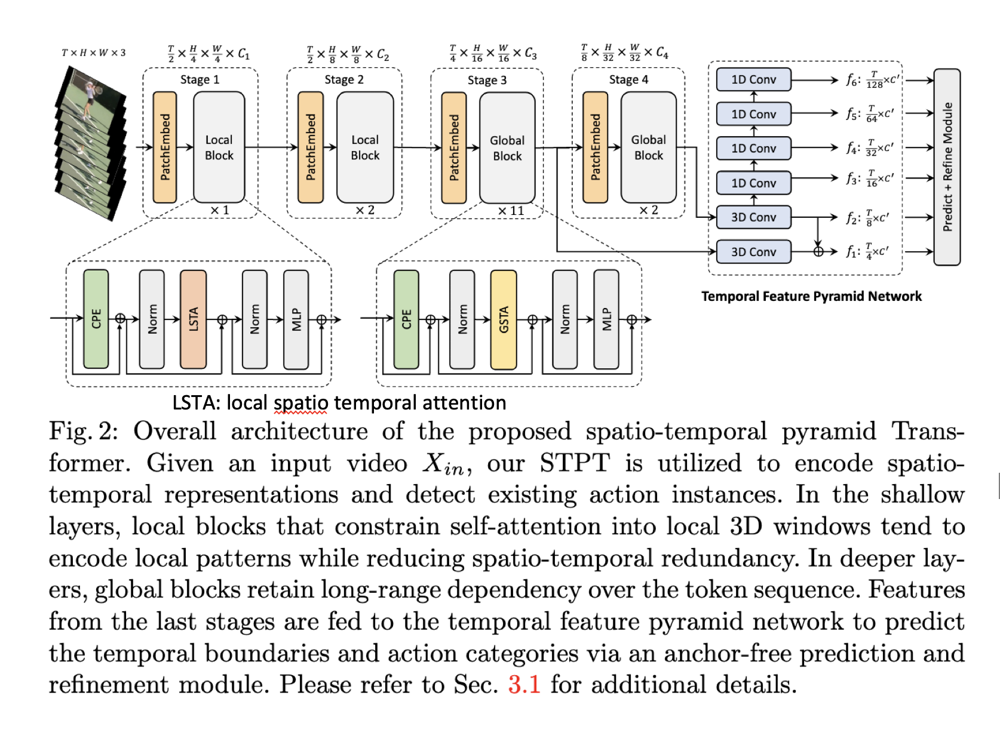
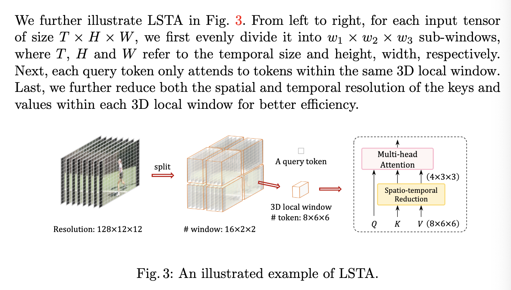
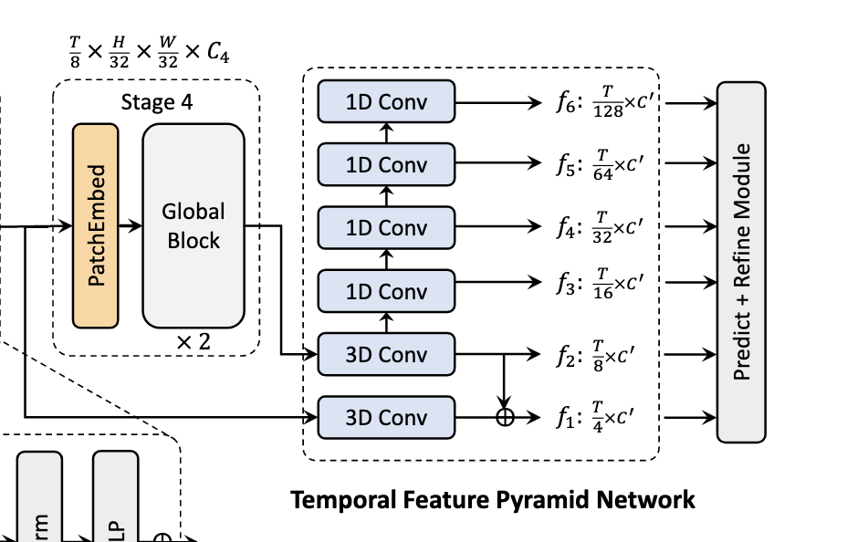
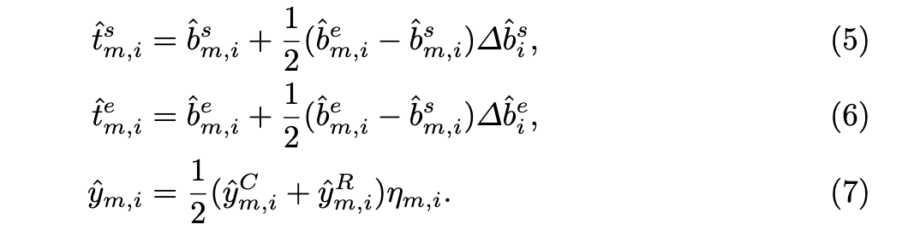

[TOC]
- Title: An Efficient Spatio-Temporal Pyramid Transformer for Action Detection
- Author: Yuetian Weng et. al.
- Publish Year: Jul 2022
- Review Date: Thu, Oct 20, 2022
Summary of paper
Motivation
- the task of action detection aims at deducing both the action category and localisation of the start and end moment for each action instance in a long, untrimmed video.
- it is non-trivial to design an efficient architecture for action detection due to the prohibitively expensive self-attentions over a long sequence of video clips
- To this end, they present an efficient hierarchical spatial temporal transformer for action detection
- Building upon the fact that the early self-attention layer in Transformer still focus on local patterns.
Background
- to date, the majority of action detection methods are driven by 3D convolutional neural networks (CNNs), e.g., C3D, I3D, to encode video segment features from video RGB frames and optical flows
- however, the limited receptive field hinders the CNN-based models to capture long-term spatio-temporal dependencies. alternatively, vision transformers have shown the advantage of capturing global dependencies via the self-attention mechanism.
- Hierarchical ViTs divide Transformer blocks into several stages and progressively reduce the spatial size of feature maps when the network goes deeper.
- but having self-attention over a sequence of images is expensive
- also they found out that the global attention in the early layers actually only encodes local visual pattens (i.e., it only attends to its nearby tokens in adjacent frames while rarely interacting with tokens in distance frames)

Efficient Spatio-temporal Pyramid Transformer

-
some issues about redundancy
- target motions across adjacent frames are subtle, which implies large temporal redundancy when encoding video representations.
- they observed that the self-attention in the shallow layers mainly focuses on neighbouring tokens in a small spatial area and adjacent frames, rarely attending to other tokens in distant frames.
-
encourage locality inductive bias
- from theoretical perspective, locality inductive bias suppresses the negative Hessian eigenvalues, thus assisting in optimisation by convexifying the loss landscape [Park, N., Kim, S.: How do vision transformers work? In: ICLR (2022)]
-
jointly learn spatio-temporal representation
- the model used Conv3D and attention to do this jointly rather than learn separately
Some key terms
Temporal feature pyramid network
- progressively reduce the spatial and temporal dimension and enlarge the receptive field into different scales.
- the multi-scale spatio-temporal feature representation are further utilised to predict the temporal boundaries and categories via an anchor-free prediction and refinement module
MViT
- previous work lacks hierarchical structure or model spatio-temporal dependencies separately, which may not be sufficient for the task of action detection
- targeting these issues, MViT presents a hierarchical Transformer to progressively thrink the spatio-temporal resolution of feature maps while expanding the channels as the network goes deeper.
Relation to existing video Transformers
- while others are based on separate space-time attention factorization, this method can encode the target motions by jointly aggregating spatio-temporal relations, without loss of spatio-temporal correspondence.
- apply local self-attention -> lower computational cost
- LSTA is data-dependent and flexible in terms of window size
Additional Illustration of LSTA

Temporal Feature Pyramid
- given an untrimmed video, action detection aims to find the temporal boundaries and categories of action instances, with annotation denoted by ${\psi_n = (t_n^s, t_n^e, c_n)}_{n=1}^{N}$
- the 3D feature maps are then fed to TFPN to obtain multi-scale temporal feature maps

- motivation
- multi-scale feature maps contribute to tackle the variation of action duration
- specifically, we construct an M-level temporal feature pyramid ${f_m}_{m=1}^M$, where $f_m \in \mathbb R^{T_m \times C’}$ and $T_m$ is the temporal dimension of the m-th level.
- TFPN contains two 3D convolution layers followed by 1D Conv layer to progressively forms a feature hierarchy
Refinement
after we predict class label $\hat y_i^C$ and boundary distances $(\hat b_i^s, \hat b_i^e)$, they further predict an offset $(\Delta \hat b_i^s, \Delta \hat b_i^e)$ and the refinement action category label $\hat y _i^R$
In the final prediction, we have the following form

Potential future work
we may use this to construct lang rew module